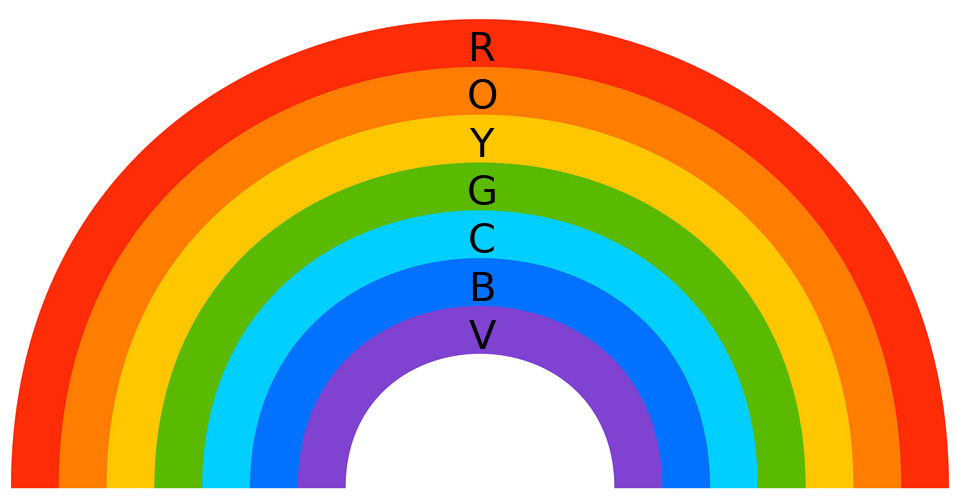
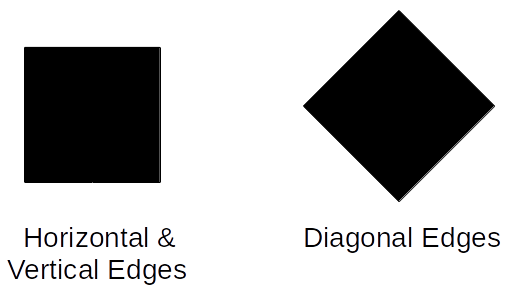
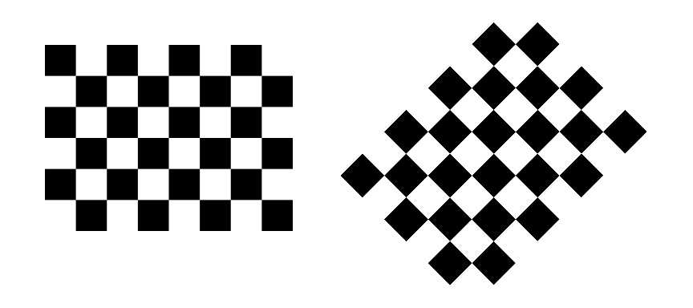
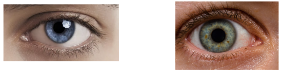
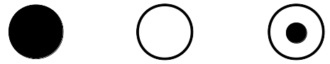

TinyYoloV2 Face Detection: Experiments
Navigation: Return to Demo or View Tutorial
Layer 1 Feature Detectors
The layer 1 (conv1) kernels are 3x3 feature detectors sensitive to
color, oriented edges, or some combination of the two. You can
measure the responses of feature detectors by holding up various
stimuli to the camera.
Color detection:
- Expt. 1: Use a color palette such as the rainbow figure
below to measure each kernel's reponse to color.

Color code: (R)ed, (O)range, (Y)ellow, (G)reen, (B)lue, (I)ndigo, (V)iolet.
- Expt. 2: Notice that kernel 11, labeled the "Red patch
detector", also responds to violet, because violet is a mixture of
blue and red. How accurate are the other kernel color descriptions?
Test them and see.
- Expt. 3: Which kernel responds best to light-colored
skin? Which responds best to dark-colored skin? Which responds well
to lips? Which responds well to eyes?
Orientation detection: Some kernels look for horizontal,
vertical, or diagonal edges. For example, kernel 8 is a diagonal edge
detector that looks for a row of light pixels above a row of dark
pixels. It doesn't care about color, so the R, G, and B channels of
kernel 8, each of which has a 3x3 pattern of weights, are similar: the
top left corner has positive weights and the bottom right corner has
negative weights.

- Expt. 4: Hold up a black square to the camera and
observe that kernel 8 responds most strongly to the top edge of
the square, and a bit less strongly to the left edge. If you
rotate the square by 30 degrees in one direction, the kernel
responds strongly to both the top diagonal edges, and not to the
bottom diagonal edges. But if you rotate it by 30 degrees in the
other direction, the kernel responds to only one of the four
diagonal diagonal edges. Why?
- Expt. 5: Kernel 4 is a little messier but is also
basically a diagonal edge detector. Compare its weight pattern to
that of kernel 8. Based on the differences in the weights, how
would you expect kernel 4 to respond to the black square stimulus?
Show it the square and test your prediction.
- Expt. 6: Try showing the checkerboard patterns below to
kernels 4 and 8. Since each kernel looks at only a 3x3 patch of
pixels, it doesn't know that it's looking at a checkerboard. But
do the checkerboards make it easier for you to see how the kernels
respond to changes in orientation?

- Expt. 7: Explore the other kernels' edge responses.
Which kernels are sensitive to the orientations of the edges?
Which kernels are not? How do their weights differ?
Layer 4 Feature Detectors
Max pooling layer 4 is a hidden layer that has seven convolutional
layers and three previous max pooling layers leading up to it, so its
units are affected by larger patches of the image: 46x46 pixels
vs. 3x3 pixels for convolutional layer 1. These kernels compute more
complex features than just edges or color patches. There are 128
kernels in this layer, so there are 128 different features being
represented. It's hard to say exactly what these features are. But
each kernel at this layer, when convolved with the preceding layer's
output, generates a 14x14 image, so we can investigate the kernels by
supplying various input images and seeing how they respond.
The demo starts out by displaying kernels 26, 36, 46, and 112. These
appear to be eye detectors.
- Expt 8: How do these kernels respond to photographs of a
single eye?

- Expt 9: How do these kernels respond to drawings of a single eye?
- Expt 10: How do these kernels respond to circles?

- Expt 11: How do these kernels respond to abstract eye shapes?
- Expt 12: What other facial feature detectors can you
find? Candidates to consider: mouth detectors, nose detectors,
chin detectors, hairline detectors.
Output Layer: Face Detection
- Human photographs
- Line drawings of faces
- Missing features (eyes, mouth)
- Animal faces
- Cartoon characters
- Sideways or upside-down faces
- Why do the bounding box candidates change colors?
|